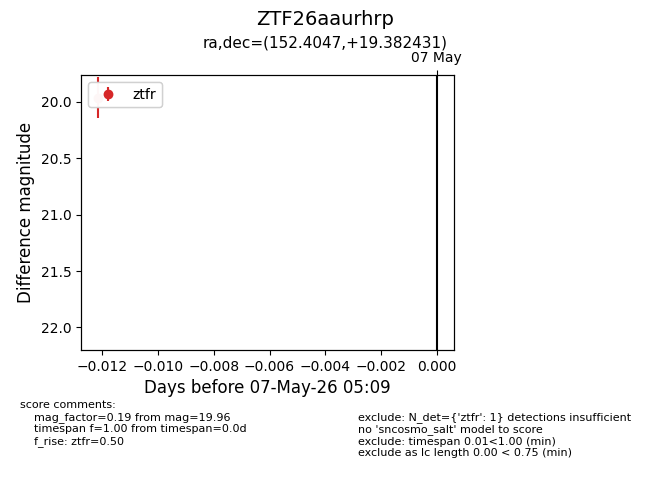
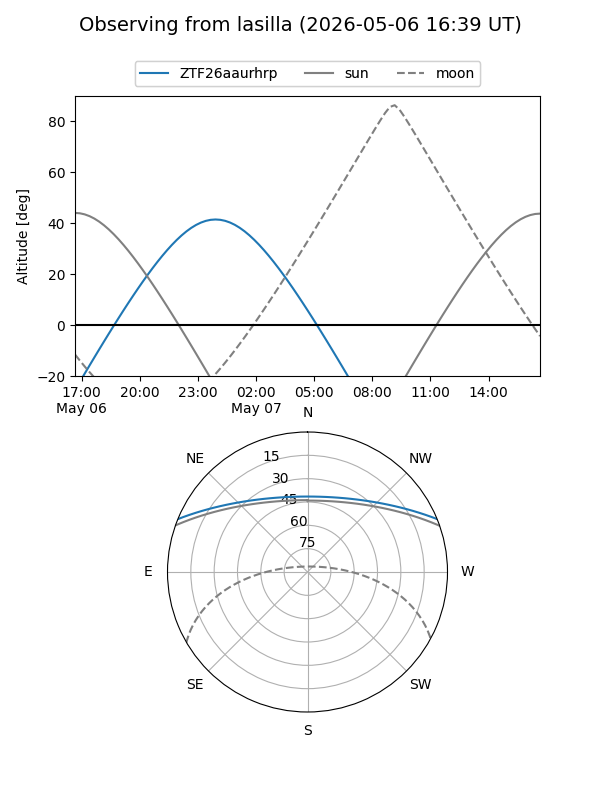
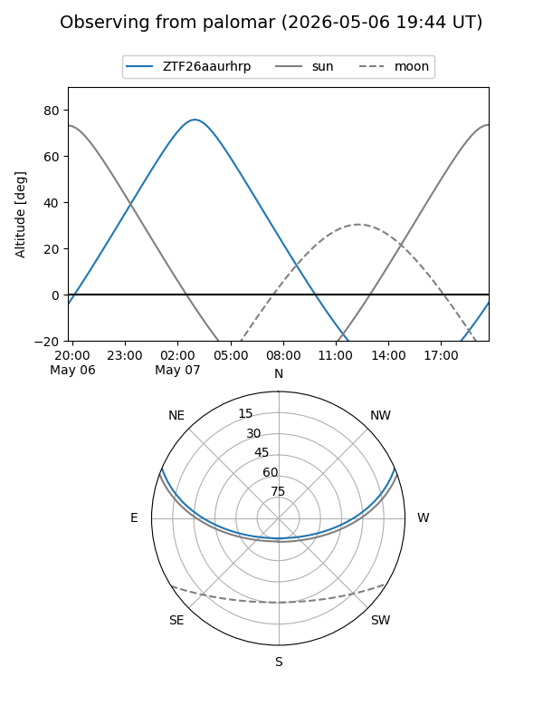
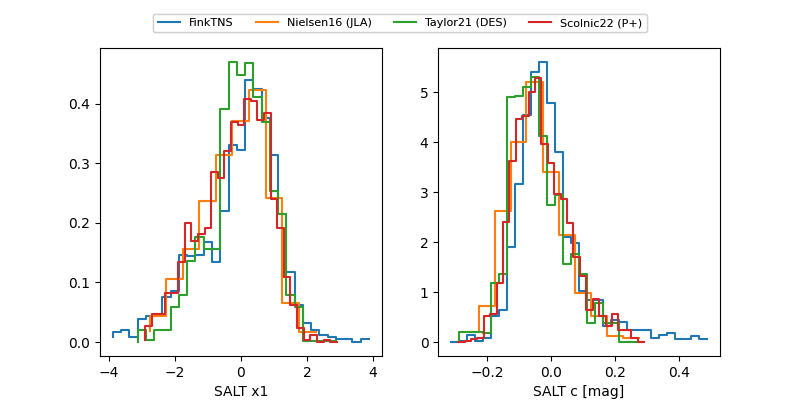

ZTF26aaurhrp
Target ZTF26aaurhrp at 2026-05-07 05:10
Aliases and brokers:
FINK: link
Lasair: link
ALeRCE: link
alt names
ZTF26aaurhrp (ztf,fink_ztf)
Coordinates:
equatorial (ra, dec) = 152.4047,+19.38243
equatorial (HMS+DMS) = 10:09:37.14,+19:22:56.75
galactic (l, b) = (215.9191,+52.20007)
Flags:
Photometry:
last ztfr=19.96
1 ztfr detections
Lightcurve

Visibility


Additional plots
